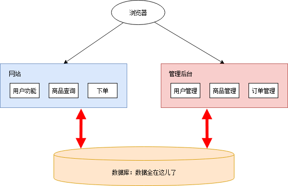
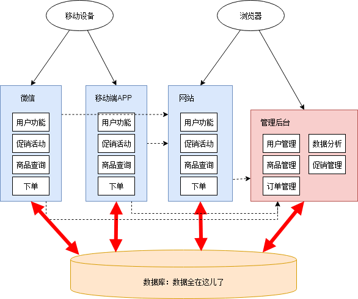
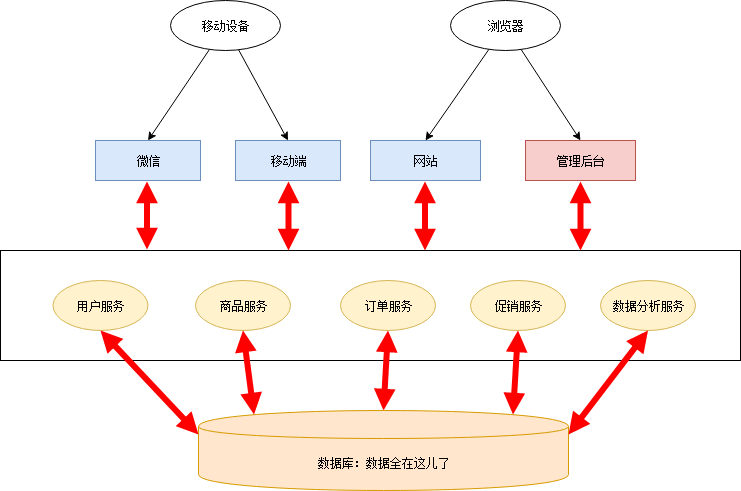
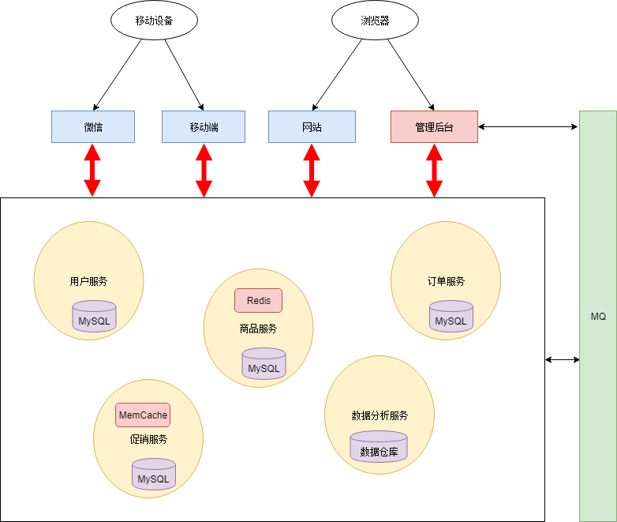

本文将介绍微服务架构和相关的组件，介绍他们是什么以及为什么要使用微服务架构和这些组件。本文侧重于简明地表达微服务架构的全局图景，因此不会涉及具体如何使用组件等细节。
要理解微服务，首先要先理解不是微服务的那些。通常跟微服务相对的是单体应用，即将所有功能都打包成在一个独立单元的应用程序。从单体应用到微服务并不是一蹴而就的，这是一个逐渐演变的过程。本文将以一个网上超市应用为例来说明这一过程。
几年前，小明和小皮一起创业做网上超市。小明负责程序开发，小皮负责其他事宜。当时互联网还不发达，网上超市还是蓝海。只要功能实现了就能随便赚钱。所以他们的需求很简单，只需要一个网站挂在公网，用户能够在这个网站上浏览商品、购买商品；另外还需一个管理后台，可以管理商品、用户、以及订单数据。
我们整理一下功能清单：
由于需求简单，小明左手右手一个慢动作，网站就做好了。管理后台出于安全考虑，不和网站做在一起，小明右手左手慢动作重播，管理网站也做好了。总体架构图如下：

小明挥一挥手，找了家云服务部署上去，网站就上线了。上线后好评如潮，深受各类肥宅喜爱。小明小皮美滋滋地开始躺着收钱。
好景不长，没过几天，各类网上超市紧跟着拔地而起，对小明小皮造成了强烈的冲击。
在竞争的压力下，小明小皮决定开展一些营销手段：
这些活动都需要程序开发的支持。小明拉了同学小红加入团队。小红负责数据分析以及移动端相关开发。小明负责促销活动相关功能的开发。
因为开发任务比较紧迫，小明小红没有好好规划整个系统的架构，随便拍了拍脑袋，决定把促销管理和数据分析放在管理后台里，微信和移动端 APP 另外搭建。通宵了几天后，新功能和新应用基本完工。这时架构图如下：

这一阶段存在很多不合理的地方：
尽管有着诸多问题，但也不能否认这一阶段的成果：快速地根据业务变化建设了系统。不过紧迫且繁重的任务容易使人陷入局部、短浅的思维方式，从而做出妥协式的决策。在这种架构中，每个人都只关注在自己的一亩三分地，缺乏全局的、长远的设计。长此以往，系统建设将会越来越困难，甚至陷入不断推翻、重建的循环。
幸好小明和小红是有追求有理想的好青年。意识到问题后，小明和小红从琐碎的业务需求中腾出了一部分精力，开始梳理整体架构，针对问题准备着手改造。
要做改造，首先你需要有足够的精力和资源。如果你的需求方（业务人员、项目经理、上司等）很强势地一心追求需求进度，以致于你无法挪出额外的精力和资源的话，那么你可能无法做任何事……
各个应用后台只需从这些服务获取所需的数据，从而删去了大量冗余的代码，就剩个轻薄的控制层和前端。这一阶段的架构如下：

这个阶段只是将服务分开了，数据库依然是共用的，所以一些烟囱式系统的缺点仍然存在：
如果一直保持共用数据库的模式，则整个架构会越来越僵化，失去了微服务架构的意义。因此小明和小红一鼓作气，把数据库也拆分了。所有持久化层相互隔离，由各个服务自己负责。另外，为了提高系统的实时性，加入了消息队列机制。架构如下：

完全拆分后各个服务可以采用异构的技术。比如数据分析服务可以使用数据仓库作为持久化层，以便于高效地做一些统计计算；商品服务和促销服务访问频率比较大，因此加入了缓存机制等。
还有一种抽象出公共逻辑的方法是把这些公共逻辑做成公共的框架库。这种方法可以减少服务调用的性能损耗。但是这种方法的管理成本非常高昂，很难保证所有应用版本的一致性。
数据库拆分也有一些问题和挑战：比如说跨库级联的需求，通过服务查询数据颗粒度的粗细问题等。但是这些问题可以通过合理的设计来解决。总体来说，数据库拆分是一个利大于弊的。
微服务架构还有一个技术外的好处，它使整个系统的分工更加明确，责任更加清晰，每个人专心负责为其他人提供更好的服务。在单体应用的时代，公共的业务功能经常没有明确的归属。最后要么各做各的，每个人都重新实现了一遍；要么是随机一个人（一般是能力比较强或者比较热心的人）做到他负责的应用里面。在后者的情况下，这个人在负责自己应用之外，还要额外负责给别人提供这些公共的功能——而这个功能本来是无人负责的，仅仅因为他能力较强 / 比较热心，就莫名地背锅（这种情况还被美其名曰能者多劳）。结果最后大家都不愿意提供公共的功能。长此以往，团队里的人渐渐变得各自为政，不再关心全局的架构设计。
从这个角度上看，使用微服务架构同时也需要组织结构做相应的调整。所以说做微服务改造需要管理者的支持。
改造完成后，小明和小红分清楚各自的锅。两人十分满意，一切就像是麦克斯韦方程组一样漂亮完美。
然而……
“不积跬步，无以至千里”，希望未来的你能：有梦为马 随处可栖！加油，少年！
关注公众号:「Java 知己」，每天更新Java知识哦，期待你的到来！